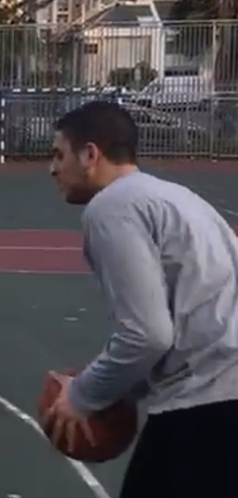
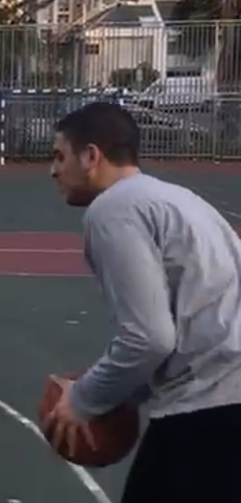

I have many hobbies – the greatest, most meaningful, and important one is Torah study.
Below, I’ll tell you about it, as well as other hobbies of mine such as sports and gaming.
Beyond the fact that observing the Torah and commandments is my way of life, Torah study itself is very important to me, as it is essential to my lifestyle.
As the saying goes: "גדול תלמוד שמביא לידי מעשה"
Throughout my adult years, especially during my time in yeshiva, Torah study has played a major role in my life.
Even today, I enjoy learning Torah, expanding and deepening my knowledge in Torah, Halacha, ethics, and more.
All of this is in addition to the fact that the study itself is a great and significant mitzvah.
In my free time, I enjoy playing, watching, and being involved in sports like soccer, basketball, tennis, and more.
These activities help me feel better overall, and of course, they are important for maintaining physical health and staying fit.
Even though I don't always manage to make time—especially recently—I always strive and aim to do as much as I can.
 

Another activity I enjoy doing in my free time, which also adds fun and enjoyment to my day,
is playing video games.
Sometimes I play alone,and other times I play with my brothers.
I play various types of video games, mainly sports.